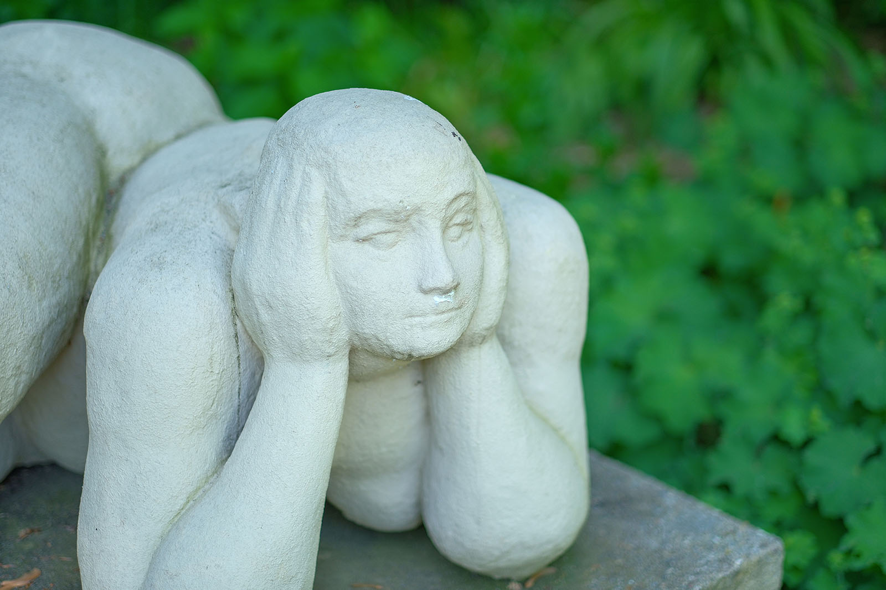
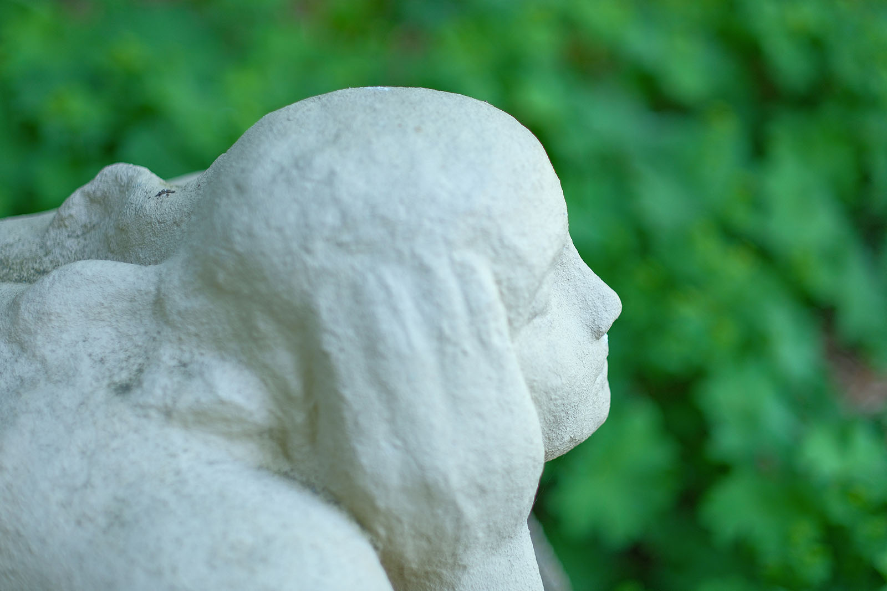
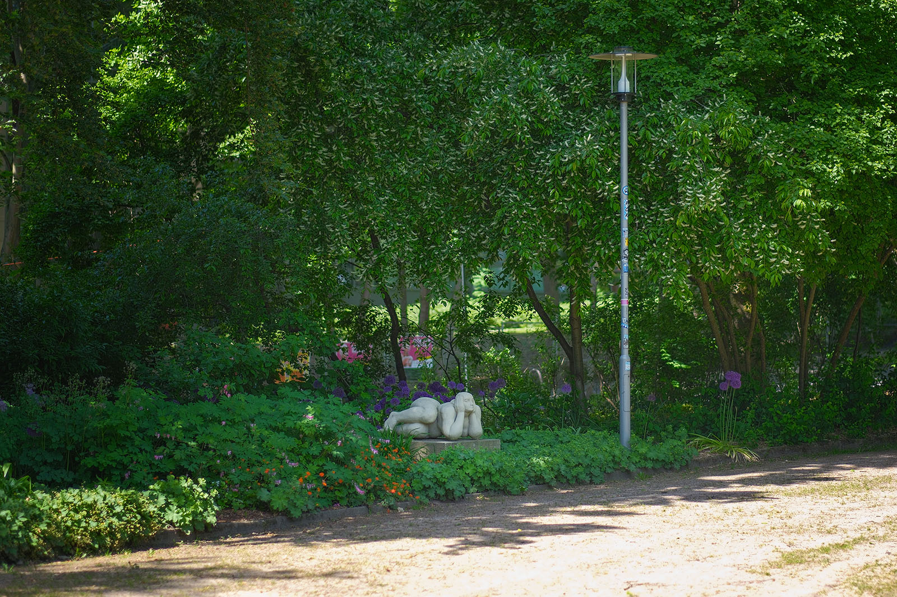
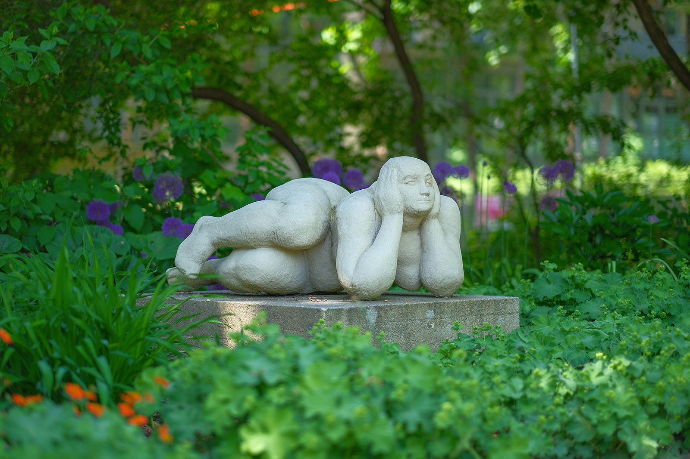

Recherche und Werkbeschreibung: Roman Pilz. Text und Fotografien wechseln sich wie in einem Magazin ab. Ein Klick auf ein Bild öffnet die Großansicht.
Hunzingers Betonplastik "Sphinx" entstand als Modell 1974 und wurde wohl im darauffolgenden Jahr als Guss realisiert. Sie kam 1976 nach Chemnitz - nach der Ausstellung in der regelmäßigen Freiluftschau „Plastik im Freien“ wurde sie von der Stadt angekauft. Sie wurde wohl im Verlauf der 1980er Jahre im Schloßbergpark aufgestellt.
Die weibliche Figur zeichnet sich durch eine opulente Körperfülle aus und zeigt einen liegenden Akt. Die Frau stützt ihren Kopf in die nach vorne aufgestellten Arme. Ihre großen Hände umschließen ihre Wangen von beiden Seiten. Das ganze Gewicht ruht auf der seitlich gedrehten Hüfte. Die angezogenen Beine liegen versetzt übereinander und bleiben in der Schwebe, ebenso wie die zwischen den Armen eingehegten Brüste.
Ingeborg Hunzinger (Geburtsname: Franck) wurde 1915 in Berlin geboren, wo sie auch 2009 verstarb. Hunzinger wurde von ihrem Großvater, dem Berliner Secessionskünstler Philipp Franck früh gefördert. Sie begann 1935 ein Studium an der Hochschule für freie und angewandte Kunst in Berlin-Charlottenburg (später Universität der Künste Berlin), dass sie aber bereits im zweiten Studienjahr wegen ihrer politischen Haltung und jüdischer Herkunft abbrechen musste.
Hunzinger absolvierte dann von 1936 bis 1938 eine Steinmetzlehre in Würzburg. Ab 1938 war sie Privatschülerin von Ludwig Kasper in der Ateliergemeinschaft Klosterstraße, doch bereits 1939 wurde ihr von der Reichskulturkammer als Tochter einer Jüdin ein Berufsverbot erteilt und sie emigrierte daraufhin nach Italien. Sie kehrte bereits 1942 mit ihrem Partner, dem Maler Helmut Ruhmer, den sie aber wegen der Rassegesetze nicht heiraten durfte, nach Deutschland zurück.
Obwohl ihr erster Mann 1945 im Krieg starb, blieb sie noch bis 1949 mit ihren beiden Kindern im Schwarzwald, nahe der Schweizer Grenze. Dort engagierte sie sich für die KPD und arbeitete als Töpferin. Gemeinsam mit ihrem zweiten Mann, dem Spanienkämpfer Adolf Hunzinger, kehrte sie 1949 nach Ost-Berlin zurück.
Dort nahm sie von 1951 bis 1953 an der Kunsthochschule in Berlin-Weißensee wieder ihr Studium auf und war dort Meisterschülerin von Fritz Cremer und Gustav Seitz. Nach ihrem Abschluss lehrte sie kurz an ihrer Hochschule, arbeitete dann aber seit 1953 als freischaffende Künstlerin in Berlin-Rahnsdorf. In den 1960er Jahren heiratete sie den Bildhauer Robert Riehl (1924–1976).
Sie arbeitet hauptsächlich figürlich. Charakteristisch sind ihre kräftigen weiblichen Aktfiguren, die sie meist in Stein ausführte. Sie arbeitet auch mit Gussverfahren in Beton und Bronze sowie in Keramik.
Sie bezog in ihren Werken sowohl ihre Erfahrungen im Dritten Reich als auch die Realität der Werktätigen in der DDR mit ein. Die Künstlerin erhielt zahlreiche staatliche Aufträge, auch nach der Wiedervereinigung. Von 1955 bis 1965 schuf sie vier Arbeiten für die Leunawerke, die meisten ihrer Arbeiten sind aber im öffentlichen Raum in Berlin zu sehen.
Der Kopf mit dem feinen Gesicht wirkt durch die muskulösen Oberarme und die straffen, üppigen Formen des Körpers geradezu klein und verletzlich. Die Haare liegen locker im Nacken, der undefinierbar ins Weite gehende Blick und das schmale, fast nur erahnbar Lächeln (wie bei der Mona Lisa) geben der in sich ruhenden Figur ihre rätselhafte, an die mythologische Sphinx erinnernde Gestalt.
Neben der Chemnitzer "Sphinx" wurden noch mindestens drei weitere Güsse angefertigt. Die prominenteste ist in den Arkaden im Lustgarten des Berliner Doms aufgestellt. Ein weiterer Abguss befindet sich im Kloster Unser Lieben Frauen in Magdeburg, dem Ort, wo die DDR ihre Nationale Sammlung für Plastik präsentierte. Eine nach 1990 entstandene Version ist in Berlin-Wannsee zu finden.
Ingeborg Hunzinger (Geburtsname: Franck) wurde 1915 in Berlin geboren, wo sie auch 2009 verstarb. Hunzinger wurde von ihrem Großvater, dem Berliner Secessionskünstler Philipp Franck früh gefördert. Sie begann 1935 ein Studium an der Hochschule für freie und angewandte Kunst in Berlin-Charlottenburg (später Universität der Künste Berlin), dass sie aber bereits im zweiten Studienjahr wegen ihrer politischen Haltung und jüdischer Herkunft abbrechen musste.

Hunzinger absolvierte dann von 1936 bis 1938 eine Steinmetzlehre in Würzburg. Ab 1938 war sie Privatschülerin von Ludwig Kasper in der Ateliergemeinschaft Klosterstraße, doch bereits 1939 wurde ihr von der Reichskulturkammer als Tochter einer Jüdin ein Berufsverbot erteilt und sie emigrierte daraufhin nach Italien. Sie kehrte bereits 1942 mit ihrem Partner, dem Maler Helmut Ruhmer, den sie aber wegen der Rassegesetze nicht heiraten durfte, nach Deutschland zurück.
Obwohl ihr erster Mann 1945 im Krieg starb, blieb sie noch bis 1949 mit ihren beiden Kindern im Schwarzwald, nahe der Schweizer Grenze. Dort engagierte sie sich für die KPD und arbeitete als Töpferin. Gemeinsam mit ihrem zweiten Mann, dem Spanienkämpfer Adolf Hunzinger, kehrte sie 1949 nach Ost-Berlin zurück.
Dort nahm sie von 1951 bis 1953 an der Kunsthochschule in Berlin-Weißensee wieder ihr Studium auf und war dort Meisterschülerin von Fritz Cremer und Gustav Seitz. Nach ihrem Abschluss lehrte sie kurz an ihrer Hochschule, arbeitete dann aber seit 1953 als freischaffende Künstlerin in Berlin-Rahnsdorf. In den 1960er Jahren heiratete sie den Bildhauer Robert Riehl (1924–1976).

Sie arbeitet hauptsächlich figürlich. Charakteristisch sind ihre kräftigen weiblichen Aktfiguren, die sie meist in Stein ausführte. Sie arbeitet auch mit Gussverfahren in Beton und Bronze sowie in Keramik.
Sie bezog in ihren Werken sowohl ihre Erfahrungen im Dritten Reich als auch die Realität der Werktätigen in der DDR mit ein. Die Künstlerin erhielt zahlreiche staatliche Aufträge, auch nach der Wiedervereinigung. Von 1955 bis 1965 schuf sie vier Arbeiten für die Leunawerke, die meisten ihrer Arbeiten sind aber im öffentlichen Raum in Berlin zu sehen.

